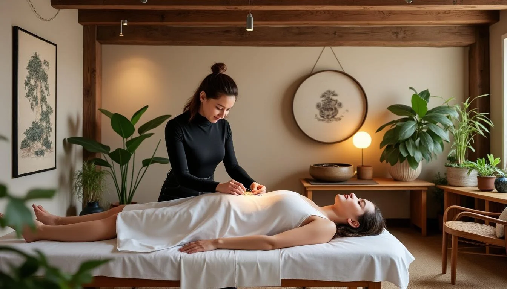
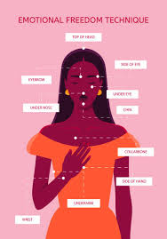
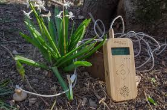

L'énergie du Cuivre et de la Nature
Découvrez des décorations artisanales vibratoires et un accompagnement bien-être sur mesure (EFT, Acupuncture, Musique des plantes).
Découvrir les créationsHéritier de la Nature, Artisan de votre Bien-être
Bonjour, je suis Karenne. Bienvenue dans mon univers où la matière rencontre l'énergie.
Mon chemin a toujours été guidé par une connexion profonde avec la nature et une fascination pour les flux énergétiques qui nous traversent. C'est dans cet équilibre que je puise mon inspiration et ma pratique.
En tant qu'artisan, je façonne le cuivre à la main. Ce métal fascinant, conducteur par excellence, devient entre mes doigts un support vibratoire conçu pour harmoniser vos lieux de vie. Chaque création est unique, imprégnée d'une intention de paix et d'équilibre.
En tant que praticien holistique, je vous accompagne sur votre propre chemin de guérison. Que ce soit par l'EFT (libération émotionnelle), l'acupuncture (rééquilibrage énergétique), ou l'écoute subtile de la musique des plantes, ma démarche est douce, bienveillante et toujours à l'écoute de votre rythme.
Mon vœu le plus cher est de vous aider à retrouver votre alignement naturel, que ce soit à travers une œuvre d'art dans votre intérieur ou une séance de soin pour votre corps et votre esprit. C'est avec joie et respect que je vous accueille.
Prendre rendez-vous, ou savoir plus